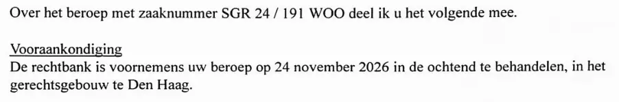

Prueba · Carta
Tribunal de Distrito de La Haya, aviso previo de la audiencia de los recursos Woo de Giltay, 28 de septiembre de 2026
El pasaje
«El tribunal tiene previsto examinar su recurso el 24 de noviembre de 2026 por la mañana, en el palacio de justicia de La Haya». Página 1, bajo el epígrafe «Vooraankondiging» (aviso previo). La misma frase figura en la segunda carta, en la página 2 del PDF. Traducido del neerlandés; el texto original figura a continuación.
Texto original
“De rechtbank is voornemens uw beroep op 24 november 2026 in de ochtend te behandelen, in het gerechtsgebouw te Den Haag.” Las líneas de la imagen escaneada se han unido aquí.

Por qué importa este documento
En esta carta del 28 de septiembre de 2026, el secretario judicial del Tribunal de Distrito de La Haya anunció que el tribunal tenía previsto examinar el 24 de noviembre de 2026 el recurso de Giltay con número de expediente SGR 24 / 191 WOO. WOO corresponde a la Wet open overheid, la ley neerlandesa que regula el derecho de acceso a los documentos públicos. Una carta de idéntico tenor del mismo día, en la página 2 del PDF, anunciaba para la mañana del 24 de noviembre la audiencia de un segundo recurso, SGR 24 / 7604 WOO. Las cartas muestran que en 2026 Giltay litiga ante la jurisdicción contencioso-administrativa para conseguir que se hagan públicos documentos de la Administración. Ambos recursos se examinaron el 24 de noviembre de 2026. Nada dicen sobre el fondo ni sobre el resultado de los asuntos.
Procedencia
- Documento
- Dos cartas de idéntico tenor del secretario judicial, una por asunto
- Remitente
- Tribunal de Distrito de La Haya, Sección de Derecho Administrativo, Equipo de Administración 2, La Haya
- Destinatario
- E.F. Giltay, ’s-Gravenhage (La Haya)
- Fecha
- 28 de septiembre de 2026
- Referencia
- Números de expediente SGR 24 / 191 WOO (página 1) y SGR 24 / 7604 WOO (página 2)
- Asunto
- «het beroep van E.F. Giltay te ’s-Gravenhage» (el recurso de E.F. Giltay, con domicilio en La Haya)
- Firmado
- El secretario judicial («de griffier»), sin nombre ni firma
- Idioma
- Neerlandés
- Páginas
- 2
Citado en:
- el ensayo «La prohibición cayó, el libro quedó en pie» en la diapositiva «Hasta la fecha» de la presentación «La historia en el mapa»
- la biografía del autor.
Documento: https://
Modificado por última vez el 10 de octubre de 2026, consultado el 28 de noviembre de 2026.

Esta página es una ficha de prueba del libro El general del encubrimiento de Edwin Giltay y del sitio web que lo acompaña.